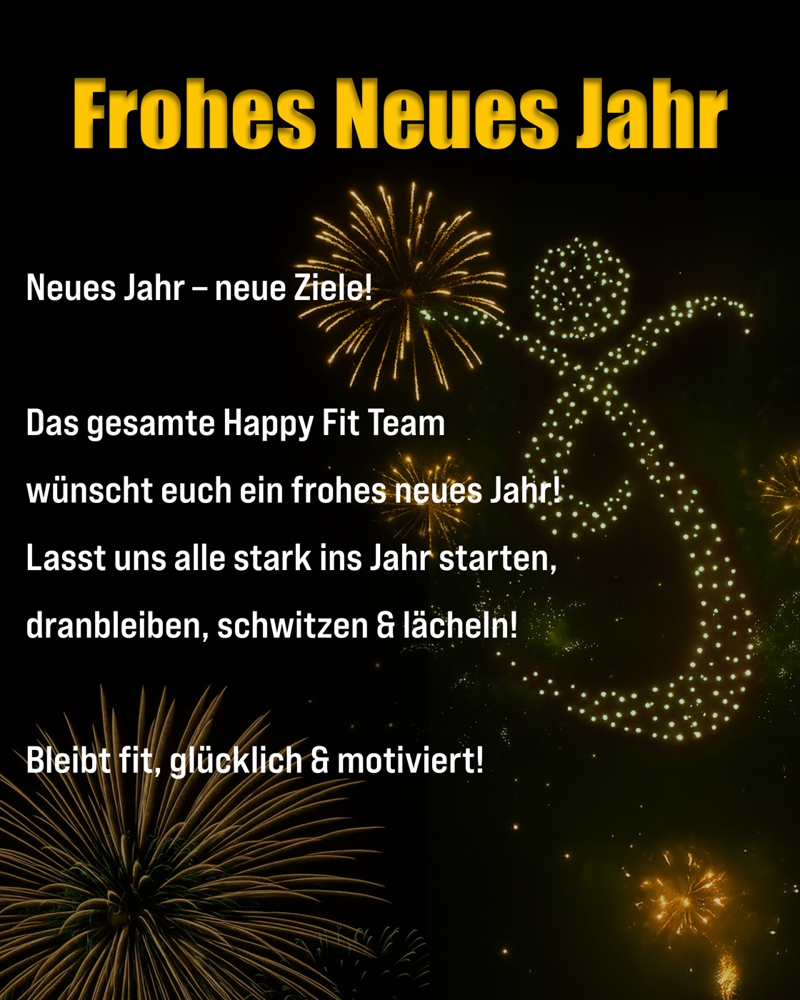
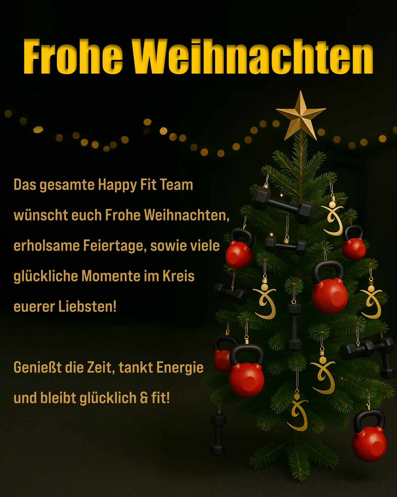
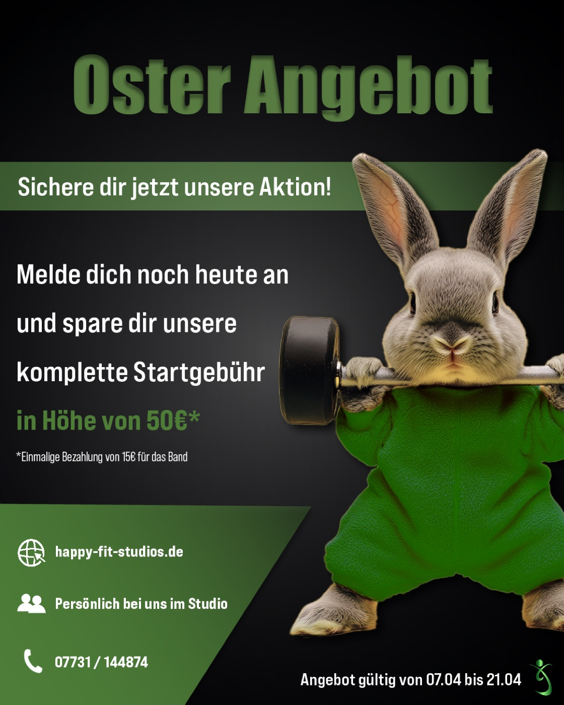
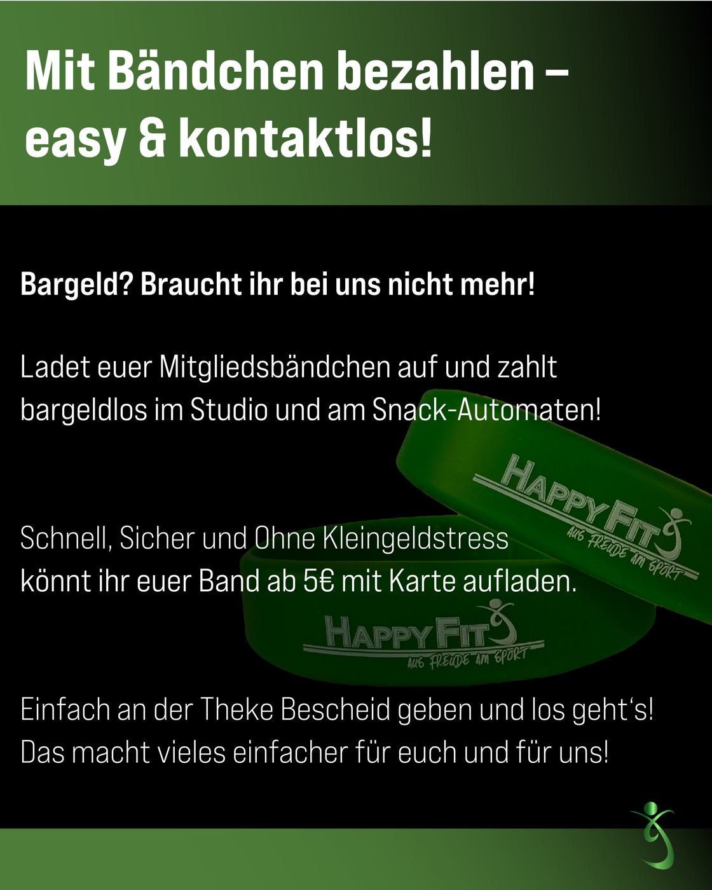
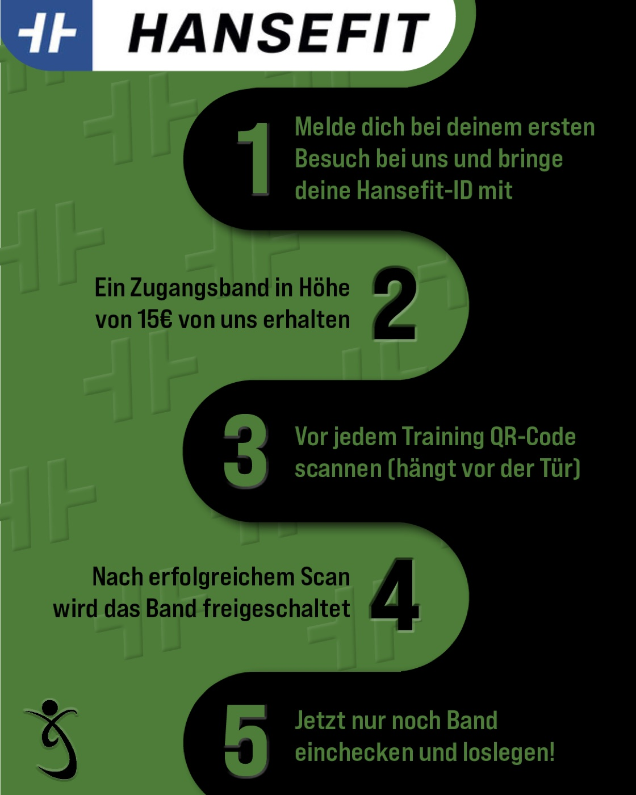

Ongoing social media management for Happy Fit — a fitness studio group with 4 locations across the DE/CH region. The work spans content creation, seasonal campaign graphics, Instagram reels, stories and community engagement strategy.




